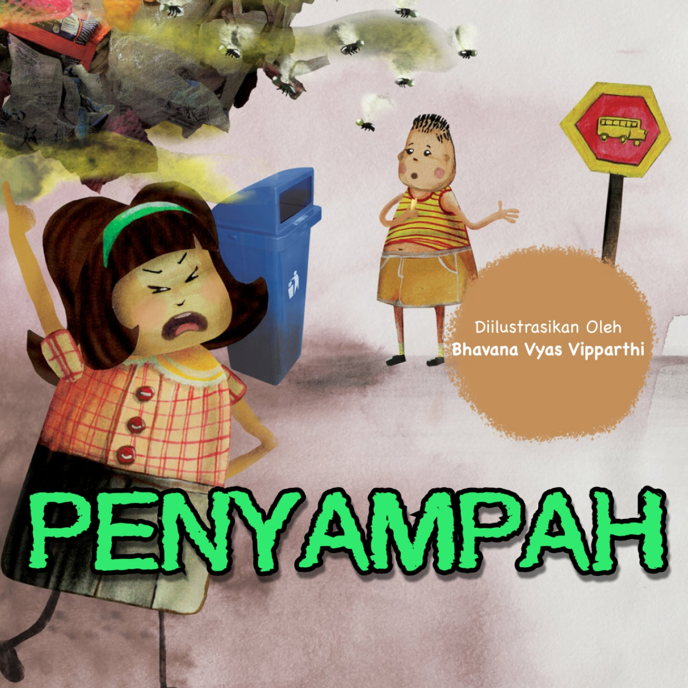

Mencari Telinga Bumi

Ke Mana Monster Sungai Mengembara?

Sampah Biji Lengkeng

Petualangan Botol Plastik

Pesan di Atas Pasir

Perjalanan Kumi

Ada Apa dengan Gugu?

Momo dan Yuyu

Penyampah

Belalang Angkat Suara